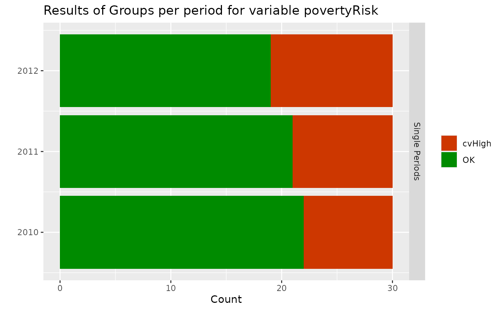
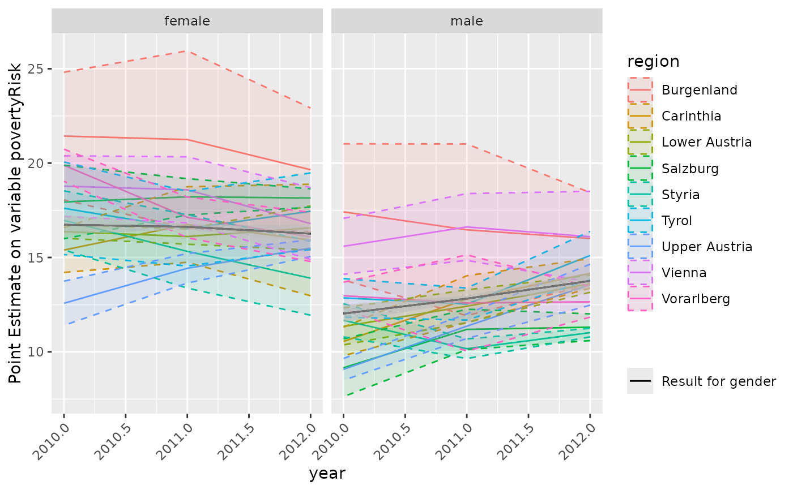

Plot results of calc.stError()
# S3 method for surveysd plot( x, variable = x$param$var[1], type = c("summary", "grouping"), groups = NULL, sd.type = c("dot", "ribbon"), ... )
Arguments
| x | object of class 'surveysd' output of function calc.stError |
|---|---|
| variable | Name of the variable for which standard errors have been
calcualated in |
| type | can bei either |
| groups | If |
| sd.type | can bei either |
| ... | additional arguments supplied to plot. |
Examples
library(surveysd) library(laeken) library(data.table) eusilc <- demo.eusilc(n = 4, prettyNames = TRUE) dat_boot <- draw.bootstrap(eusilc, REP = 3, hid = "hid", weights = "pWeight", strata = "region", period = "year") # calibrate weight for bootstrap replicates dat_boot_calib <- recalib(dat_boot, conP.var = "gender", conH.var = "region")#>#>#>#>#>#># estimate weightedRatio for povmd60 per period group <- list("gender", "region", c("gender", "region")) err.est <- calc.stError(dat_boot_calib, var = "povertyRisk", fun = weightedRatio, group = group , period.mean = NULL) plot(err.est)# plot results for gender # dotted line is the result on the national level plot(err.est, type = "grouping", groups = "gender")# plot results for gender # with standard errors as ribbons plot(err.est, type = "grouping", groups = "gender", sd.type = "ribbon")# plot results for rb090 in each db040 plot(err.est, type = "grouping", groups = c("gender", "region"))# plot results for db040 in each rb090 with standard errors as ribbons plot(err.est,type = "grouping", groups = c("gender", "region"))